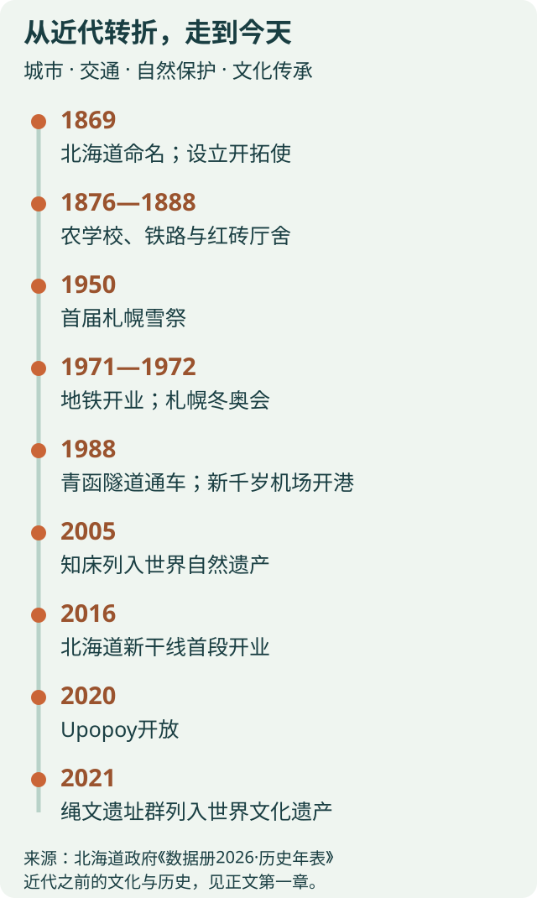
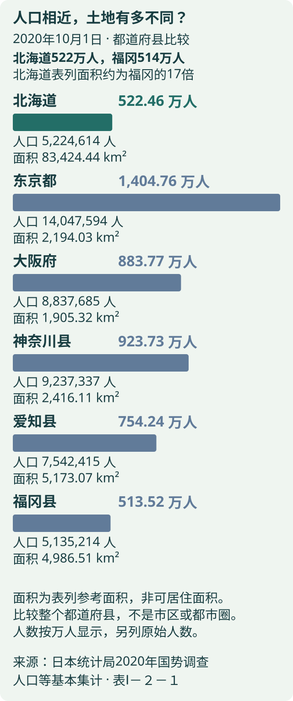
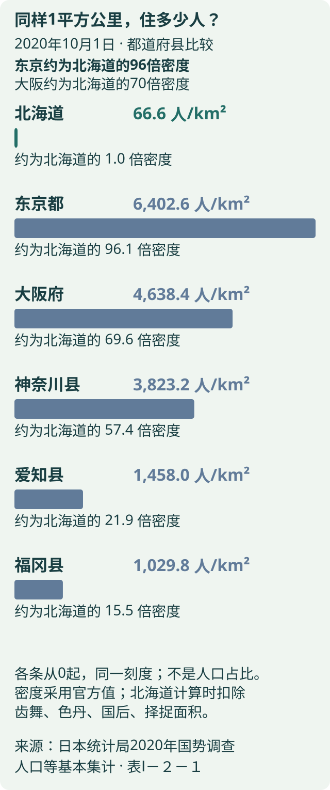
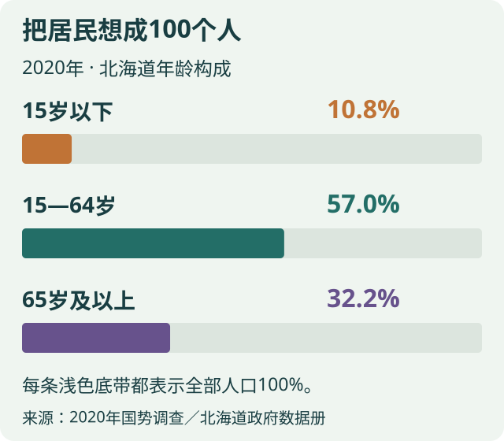
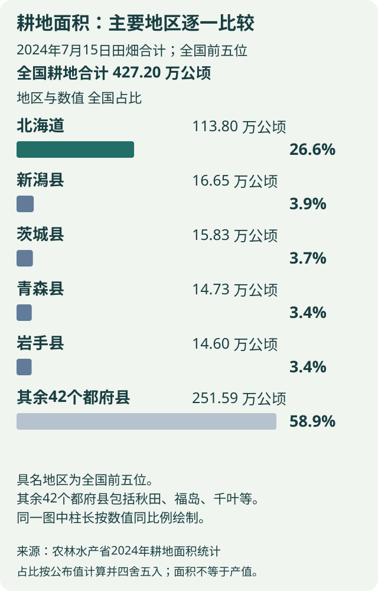
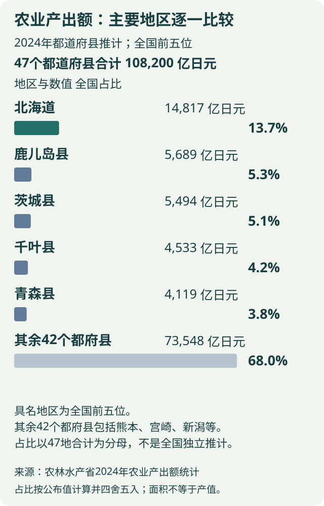
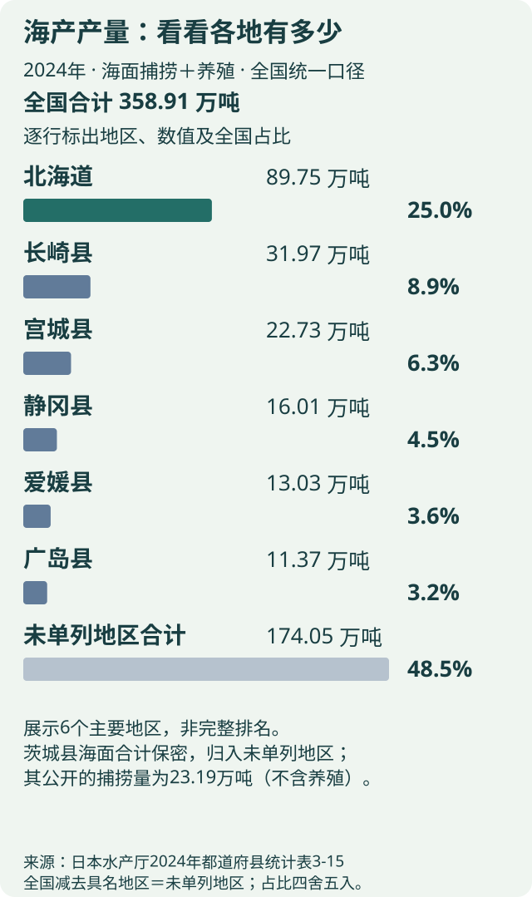
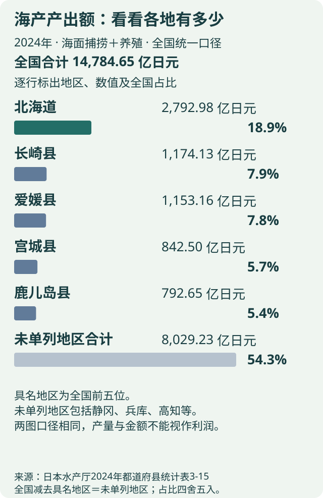

北海道读本 / HOKKAIDO
想先了解哪一面？
点开感兴趣的封面，慢慢读。每个主题都可以单独看。

Seicomart 与地方饮料，还有白色恋人、六花亭、ROYCE、KINOTOYA、LeTAO 和薯条三兄弟：认识特色，也知道怎么买、哪里买。
Seicomart：从札幌长出来的便利店
- 1971年
- 第一家店在札幌开业
- 认招牌
- Seicomart／セイコーマート
到了北海道，除了看风景，也可以逛逛本地人日常用的便利店。Seicomart 的第一家店于1971年在札幌开业，后来逐步发展到北海道各地。看到这个名字，就能想到一种很有当地生活气息的购物体验。
它的特色不只是售卖商品：Secoma 集团把原料采购、食品生产、物流配送和门店零售连在一起。因此货架上既有普通便利店食品，也能看到使用北海道原料的自有品牌商品。
旅行时可以把它当作顺路补给点，买早餐、饮水或一份热食。先找住处附近的门店即可，不必专门绕远路打卡；营业时间、座位和商品种类因店而异，也不要默认所有店都24小时营业。
HOT CHEF：在店里做好的热饭

HOT CHEF 是 Seicomart 的店内烹调品牌。与单纯把成品便当加热不同，设有厨房的门店会制作米饭、便当和熟食；在冬天路过时，热食柜是很容易理解它特色的地方。
可以留意大饭团、猪排饭和炸鸡等品类。这里的“ザンギ（Zangi）”是北海道常见的炸鸡叫法，通常先调味再炸；具体口味和做法会随店家、商品而不同。
认准 HOT CHEF 标识再选购：不是每家 Seicomart 都供应，也不能保证任何时候都有全部品种。你们7个人若临时买饭，可以各自选喜欢的，儿童份量、辣度与过敏原以商品标示和店员说明为准。
丰富町牛奶：把道北牧场带到货架上

丰富町位于道北。Seicomart 的北海道牛乳系列把这个酪农产地与日常购物联系起来；拿起一盒牛奶，可以从包装上的产地和品名认识北海道的乳业。
“北海道牛乳”是使用100%生乳的成分无调整牛奶；同系列也有调整乳脂肪含量的产品。名字相近，口感与脂肪含量却不同，适合并排看看标签，而不是把所有“北海道牛奶”都理解成同一种。
早餐可以选自己习惯的牛奶或酸奶，再配面包。冷藏食品按包装要求保存、尽快饮用；它们更适合旅行中品尝，不能把普通冷藏奶当成能长时间放在行李里的伴手礼。
Ribbon Napolin：橙色的北海道汽水

- 1911年
- Napolin 开始销售
Ribbon Napolin 是在北海道长期销售的橙色碳酸饮料，口感偏甜、带气泡。看到橙色瓶身和 Ribbon 字样，就能把它与普通可乐区分开。
它的地方特色来自长期的销售与消费习惯。逛超市或便利店时，可以买一小瓶分着尝，体验北海道日常饮料的味道；橙色外观并不等于鲜榨橙汁，饮料类型和配料请看包装。
Soft Katsugen：另一种当地熟悉的味道

- 1956年
- 瓶装 Katsugen 问世
- 1979年
- 纸盒装 Soft Katsugen 推出
Soft Katsugen（ソフトカツゲン）是北海道销售的乳酸菌饮料，带有酸甜口感。它与纯牛奶不是同一种饮品，也和碳酸汽水不同，通常在冷藏饮料区找。
这一品牌的历史可以追溯到1956年的瓶装 Katsugen；1979年推出了纸盒装 Soft Katsugen。因此“1956年”说的是品牌起点，不是今天纸盒包装的诞生时间。
想比较地方味道时，大人可以选少量尝尝，再和牛奶的口感作比较。给孩子选饮品仍以平时习惯、成分和实际份量为准，不必为了打卡把甜饮料都试一遍。
“炒面便当”：名字叫便当，其实是杯面

やきそば弁当（Yakisoba Bento）是北海道常见的即食炒面。“弁当”是商品名的一部分，打开并不是一盒有米饭和菜的普通便当，而是用热水泡开、沥水后拌酱的面。
经典款附有中式汤料包，是它容易让人记住的特点。冲泡顺序和用水方式按手中包装操作，不同系列可能不同；准备前先找好耐热杯，避免只顾着倒水而漏看说明。
它适合在住宿处尝尝这种地方日常食品，也便于在超市辨认。便利店热饭、冷藏乳品、地方汽水和即食面放在一起看，比单纯记住“必买清单”更能认识当地人的生活。
白色恋人：适合分送的薄脆夹心饼干

- 薄脆口感
- 猫舌饼干 × 巧克力
- 分送亲友
- 独立包装，按片数选择
有什么特色｜ISHIYA 的白色恋人自1976年推出。两片薄薄的猫舌饼干夹住巧克力，口感轻脆，奶香比较明显；它是饼干类点心，不是需要冷藏的生巧克力。
哪些值得买｜第一次买可以先选经典白巧克力夹心；喜欢多一点可可风味，可以选白、黑两款混合装。“黑”款夹的是牛奶巧克力，并不是苦味黑巧。送同事或亲友时，独立小包装容易分，先数好收礼人数再选盒装片数；自己吃不必为了包装买大盒。
在哪里能买｜你们在札幌可到白色恋人公园的 Shop Piccadilly、札幌大通本店或大丸札幌店选购；返程也可在新千岁机场的伴手礼商店购买，例如国内线2楼安检前的 Snow Shop 出发店。具体口味与规格以店内库存为准。
带回家怎么放｜官方要求避开阳光，在28℃以下阴凉处保存，别放在暖气旁或晒热的车内。品牌已公布从2026年12月起陆续换新包装，你们出发时可能见到新旧包装并存；配图主要帮助认识饼干，不保证与现场盒子完全一样。
六花亭：奶油葡萄干夹心与十胜点心

- 浓郁口感
- 奶油 × 白巧 × 葡萄干
- 先尝小盒
- 适合喜欢葡萄干的人
有什么特色｜六花亭起源于十胜的带广。最具代表性的 Marusei Butter Sand（マルセイバターサンド）用饼干夹住奶油、白巧克力与葡萄干做的馅，吃起来比白色恋人更厚实、浓郁。它于1977年推出，名字和包装呼应十胜早期的“Marusei”奶油。
哪些值得买｜喜欢奶油和葡萄干，优先试 Marusei 奶油夹心；不喜欢葡萄干，可以看看品牌的白巧克力，或选包含不同点心的六花セレクト等组合。先买小份全家尝尝，再决定送哪一种，比只按名气买大盒更合适。门店现吃的冰淇淋夹心与可带走的奶油夹心是不同商品，别拿错。
在哪里能买｜札幌本店位于中央区北4条西6丁目3-3，适合在札幌站周边购物时顺路去。新千岁机场国内线2楼安检前的 Snow Shop 出发店也销售六花亭商品，适合返程补买经典款；店铺限定点心不一定在机场有售。
带回家怎么放｜普通 Marusei 奶油夹心官网标示在25℃以下阴凉处可存放约9～10天，实际到手的食用期限以盒上日期为准。这类点心不适合买完放很久再送；购买时告诉店员回程时间，问清保存方式。冷冻系列与普通款要求不同，不要混用。
ROYCE：生巧克力与咸甜巧克力薯片

- 生巧要冷藏
- 10℃以下保存
- 咸甜搭配
- 巧克力薯片适合分享
有什么特色｜ROYCE 的生巧克力加入北海道鲜奶油，质地柔软，入口容易融化；巧克力薯片则把咸脆薯片与巧克力放在一起，是另一种很容易记住的搭配。两者的口感与保存条件都不同。
哪些值得买｜喜欢柔软奶香的成年人可选经典 Au Lait（オーレ）；这款用洋酒调味。想避开酒精，可以找明确标注不使用洋酒的 Mild Milk（マイルドミルク）。喜欢咸甜零食，可买 Potatochip Chocolate Original（ポテトチップチョコレート［オリジナル］）全家分着吃；薯片盒较占空间、也怕压，行李紧张时少买几盒。
在哪里能买｜新千岁机场国内线2楼有 ROYCE 新千岁机场店，可以回程集中购买。机场3楼 Smile Road 的 ROYCE Chocolate World 是另一个店区，有动物等造型巧克力与工厂展示；不要把3楼限定商品当作每家柜台都能买到的常规款。
带回家怎么放｜生巧克力需10℃以下冷藏，建议接近返程时购买，并请店员按从机场到家所需的总时间配保冷用品；不要只算飞行时长。巧克力薯片 Original 要放在25℃以下，避开日晒和潮湿。即使北海道室外很冷，室内暖气、转机和到家途中仍可能升温。
KINOTOYA：现烤芝士挞与浓郁牛乳冰淇淋

- 现场尝
- 芝士挞、牛乳冰淇淋
- 带走送人
- 曲奇比鲜点心方便
有什么特色｜KINOTOYA（きのとや）是札幌的洋菓子品牌。代表性的现烤芝士挞，用香脆挞壳配柔软芝士慕斯；极上牛乳软冰淇淋则加入北海道马斯卡彭，奶香浓郁，适合现场吃。
哪些值得买｜先尝原味现烤芝士挞；新千岁机场店还有蓝莓芝士挞，果酱带来不同口味。想把两款都试到，可选各3个的组合。带回家分送则可以看看 KINOTOYA 曲奇；机场店有四种口味的限定包装，官网标示保存期限为制造日起50天，实际以包装为准。
在哪里能买｜札幌购物时，可去南2条西3丁目、Pole Town 地下街内的 KINOTOYA BAKE 店，买芝士挞、曲奇或现场吃冰淇淋。新千岁机场国内线2楼也有 KINOTOYA 店；如果从国际线回上海，请在安检前预留往返购物时间。各店供应不同，不要默认所有限定口味都有。
怎么带走｜现烤芝士挞官网标示需冷藏、消费期限3天，当天可常温携带；回程较长时请店员确认保冷安排，到家后按要求保存。它更适合旅行中品尝或回家马上吃，冰淇淋则不能当作长途伴手礼。
别找错店｜机场原 KINOTOYA Factory 店已在2024年改为“札幌农学校 Factory 店”，与现有 KINOTOYA 新千岁机场店不同。认准きのとや招牌，再找现烤芝士挞和极上牛乳软冰淇淋。
LeTAO：双层芝士蛋糕与小樽风味点心

有什么特色｜LeTAO（ルタオ）来自小樽，招牌 Double Fromage 双层芝士蛋糕，把浓郁的烘焙芝士层与柔软的乳酪层叠在一起，适合喜欢奶香、柔滑口感的人。
哪些值得买｜全家分着吃，优先尝原味双层芝士蛋糕；喜欢巧克力可看看 Chocolat Double。送人或不便保冷时，可选“小樽色内通りフロマージュ”芝士风味猫舌饼干，比整只冷冻蛋糕容易安排。具体规格和保存方式看包装。
在哪里能买｜返程可在新千岁机场国内线2楼的 LeTAO 新千岁机场店选购；品牌官网也列有札幌大丸店。巧克力专门店 Nouvelle Vague LeTAO Chocolatier 与普通 LeTAO 店的商品不完全相同。无需为了买经典款专程增加小樽行程。
怎么带回家｜双层芝士蛋糕冷冻保存；官方说明解冻后冷藏，并在开始解冻后48小时内食用。购买时告诉店员到家总时长，确认能否保冷，不把冬季室外低温当作冷链。若运输不方便，在当地品尝蛋糕、带饼干回家更省心。
薯条三兄弟：带皮马铃薯的咸香脆口

有什么特色｜中文常说的“薯条三兄弟”，通常指 Calbee 的じゃがポックル（Jaga Pokkuru）。使用100%北海道产马铃薯，带皮切条，特点是酥脆的口感与马铃薯香；它是包装零食，不是餐厅现炸薯条。
哪些值得买｜第一次买选经典“鄂霍次克盐味”；想换口味可看看扇贝盐味或北海道玉米味。经典款有18克×10袋、18克×6袋等规格，独立小袋适合分送。不同口味的克数、过敏原和销售范围可能不同，不要只看外盒颜色。
在哪里能买｜经典盐味主要在北海道的伴手礼商店和机场销售，返程可在新千岁机场伴手礼区寻找 POTATO FARM／Calbee 标识。玉米味的官方销售渠道还包括 Calbee＋新千岁机场店。不是每家便利店都有，具体库存到店确认。
怎么选更方便｜和甜点搭配送礼时，它能补上一种咸味选择。盒装占空间、薯条也怕压，放行李时保留外盒保护；避开高温和潮湿，按包装保存，开袋后尽快吃。
挑伴手礼：按收礼的人来选

分送多位亲友｜优先看白色恋人的独立包装与总片数。喜欢葡萄干、准备很快享用的亲友，可选六花亭奶油夹心。想和家里人一起尝鲜，ROYCE 生巧或巧克力薯片更适合共享。 喜欢现烤点心，可在 KINOTOYA 尝芝士挞；需要较方便携带的礼物，可看它的曲奇。
购物地点怎么选｜札幌门店适合慢慢挑口味、看组合；机场适合补买常规款、最后购买需要保冷的商品。上述机场2楼店位于国内线航站楼，你们回上海若从国际线出发，需预留前往国内线购物及返回办理手续的时间，不要等国际线安检后再找。
给3岁孩子怎么选｜先看配料中的酒精和过敏原，尤其奶、蛋、小麦、坚果等；生巧 Au Lait 与 Mild Milk 的酒精标示不同。家里有明确忌口时直接拿包装向店员确认，不把“北海道特产”当作适合所有人的保证。
少买一点，更容易带｜六大一小可以先合购小规格尝味，再选礼盒。每个品牌先挑一种代表商品即可；价格、限定款和库存会变化，结账前再确认份数、期限与保存条件。
资料：Secoma·集团历史；Seicomart·HOT CHEF；Seicomart·北海道牛乳；Pokka Sapporo·Ribbon Napolin；雪印Megmilk·Katsugen历史；东洋水产·炒面便当；ISHIYA·白色恋人商品；ISHIYA·保存与购买问答；ISHIYA·2026年12月包装更新；ISHIYA·门店资料；六花亭·品牌与札幌本店；六花亭·Marusei 奶油夹心；六花亭·商品目录；ROYCE·生巧 Au Lait；ROYCE·生巧 Mild Milk；ROYCE·巧克力薯片 Original；新千岁机场·ROYCE 店；ROYCE·Chocolate World；新千岁机场·Snow Shop 等购物店铺；KINOTOYA·新千岁机场店与商品；KINOTOYA·Pole Town 店；KINOTOYA·原机场Factory店更名公告；新千岁机场·KINOTOYA店；LeTAO·机场店；LeTAO·双层芝士蛋糕；LeTAO·机场销售商品；Calbee·薯条三兄弟；Calbee·销售渠道说明；Calbee·玉米味商品公告。核对：2026-10-16。
四大分区在哪里？对着代表景点照片，认识各区特色与这次目的地。
为什么先认识分区
- 3片海
- 日本海／鄂霍次克海／太平洋
- 2,291米
- 北海道最高峰旭岳的海拔
北海道旅游常按道央、道南、道北、道东四个区域来认识。这里沿用北海道官方旅游网站的分法；它是旅行中常用的地理分区，不是四个独立的行政区。
记位置可以先看三片海：西侧是日本海，东侧是鄂霍次克海，南侧面向太平洋。中央的山地把平原、盆地与海岸分隔开，因此地图上看起来接近的地点，交通路线未必笔直。
札幌靠近石狩平原，旭川位于上川盆地，美瑛在盆地南侧的丘陵地带。顺着这条线看窗外，城市街区会逐渐过渡到农田、丘陵和远处的山。
道央：城市生活与湖泊温泉的交汇处

北海道的中西部，以札幌为核心；向西连接小樽、二世谷，向南延伸到千岁、洞爷湖、登别和日高一带。
区域特色 · 城市与交通门户道央的特色是能把城市和自然放在同一张旅行地图上：札幌有商店、餐饮、历史建筑和季节活动，周边则是港口、山地、湖泊与温泉。新千岁机场也在这里，很多人第一次认识北海道就是从道央开始。
它不只是札幌的市中心。小樽带来港口与仓库的景观，洞爷湖和登别展示火山地形，二世谷则代表山地户外活动。可以把道央理解为北海道城市体验最集中的区域，同时向外连接多种自然景色。
有哪些特色景点？
- 札幌大通公园、电视塔
- 在城市中心认识札幌的街区与季节活动；电视塔是辨认市中心方向的地标。
- 札幌钟楼与红砖厅舍
- 从近代教育与行政建筑认识札幌的成长。
- 小樽运河
- 运河和旧仓库组成港口城市的代表景观，气质与札幌的棋盘街区不同。
- 洞爷湖与有珠山
- 湖泊与火山相邻，适合认识北海道的火山景观。
- 登别地狱谷
- 以火山地热地形和温泉闻名；与城市散步是完全不同的景观类型。
- 支笏湖、定山溪与二世谷
- 分别代表火山湖、山谷温泉和山地户外活动。
本次会到：新千岁机场、札幌。小樽、洞爷湖、登别等是区域背景介绍，尚未加入行程。
道北：从内陆丘陵，一直延伸到北端海岛

从北海道内陆的旭川、美瑛、富良野，向北延伸到留萌、稚内，以及日本海上的利尻岛、礼文岛。
区域特色 · 田园、山岳与最北端风景道北不只是地图最上端的一小块。旭川、美瑛和富良野也属于官方旅游分区中的道北；这部分以城市、农业丘陵和大雪山山岳景观相连，是这次旅行最相关的内陆区域。
再往北，景色逐渐转向海岸与海岛。稚内、宗谷岬、利尻和礼文与旭川、美瑛之间并非同一个小景区，不能仅因为都叫“道北”就理解成可以顺路一起逛。
有哪些特色景点？
- 旭山动物园
- 在旭川观察动物的活动方式，是这次带孩子认识北海道的重要一站。
- 美瑛青池与白须瀑布
- 位于白金地区，以水景、树林与冬季雪景见长；青池冬天可能覆雪，并非全年呈现蓝色水面。
- 美瑛丘陵、四季彩之丘
- 起伏田地形成开阔风景；彩色花田属于有季节性的景色，12月主要看雪与地形。
- 富良野花田
- 夏季花田是代表印象；不要把薰衣草照片当作冬季现场。
- 旭岳、层云峡与黑岳
- 山岳、峡谷和温泉是这一带的关键词，与美瑛的低缓丘陵不同。
- 宗谷岬、利尻岛与礼文岛
- 代表北端海岸、岛屿山形与海岛景观，是道北另一条地域线索。
本次会到：旭川、旭山动物园、美瑛、青池和白须瀑布。稚内与海岛用于认识分区，不是这次行程。
道南：从港口与旧城镇，读懂北海道的历史

位于北海道西南部，面向津轻海峡，包括函馆及周边的大沼、松前、江差，以及西侧的奥尻岛。
区域特色 · 港口历史与海岸文化道南常以函馆作为认识区域的入口。山、海湾和城市相邻，港口贸易留下的建筑与街道，使这里的历史感不同于札幌的近代城市格局。看夜景时，海岸线夹着灯光的形状尤其容易记住。
从函馆往外看，松前、江差让人认识城镇与海上贸易的历史；大沼展示山麓湖沼景观，奥尻则属于海岛体验。因此，道南并不只有“函馆夜景”，而是历史城镇与海洋生活相连的一片区域。
有哪些特色景点？
- 函馆山
- 俯瞰函馆湾与津轻海峡之间的城市轮廓，夜景是代表印象。
- 五棱郭
- 星形城郭遗址，从高处看能理解其独特形状，也是认识幕末历史的线索。
- 元町与金森红砖仓库
- 教会、洋馆、坡道和仓库共同呈现港口城市的历史风貌。
- 大沼国定公园
- 以湖沼、小岛和驹岳背景组成的山水景观见长。
- 松前与江差
- 分别从城下町与海上贸易的角度认识道南历史。
- 奥尻岛
- 以海岸和岛屿自然景观认识道南的另一面。
本次未安排道南。函馆与札幌是不同的区域，不能把函馆夜景当成札幌夜景。
道东：用湖泊、湿原与海岸认识大尺度自然

位于北海道东部，包含鄂霍次克沿岸的网走、知床，东南侧的钏路、根室，以及内陆的阿寒摩周和十胜、带广一带。
区域特色 · 生态景观与农牧平原道东的特点是景观尺度大、类型差异也大。知床把山、森林与海连接起来；钏路让人认识湿原；阿寒、摩周、屈斜路突出火山湖景观；十胜则以开阔农田和牧场展示另一种北海道。
因此，“道东”并不是一个中心景点的周围。湖泊、海岸、湿原和农业平原分布在不同地方，读地图时应先分清各小区域，再理解它们之间的位置关系。
有哪些特色景点？
- 知床五湖与知床半岛
- 以森林、山岳和海岸相互连接的生态景观闻名。
- 网走与鄂霍次克海岸
- 可从海岸风景、历史设施与季节性的流冰认识区域；流冰并非整个冬季都可见。
- 摩周湖
- 以深色湖面和陡峭的火山口地形见长，云雾会明显改变观景效果。
- 阿寒湖与屈斜路湖
- 湖泊、温泉及周边文化各有特色，不是同一座湖的不同名称。
- 钏路湿原
- 从湿地、河流与野生生物的联系理解北海道自然。
- 十胜、带广与内陆牧场
- 开阔农牧景观、地方食材和加工产业，是道东重要的生活与生产面貌。
本次未安排道东。美瑛虽然以自然风景闻名，但按这里采用的旅游分区属于道北，不是道东。
这次旅行跨越哪两个区域

这次主要往返于道央与道北：新千岁机场 → 札幌（道央）→ 旭川、美瑛（道北）→ 新千岁机场。道南和道东仅作地理背景介绍。
可以把札幌看作这次旅行的城市入口，把旭川看作内陆停留的中心，把美瑛看作认识田园与白金水景的窗口。新千岁机场在札幌东南侧，旭川在札幌东北侧，美瑛在旭川以南；这几个相对位置比记住四区边界更有用。
资料：北海道政府《数据册2026·地势》；北海道官方旅游网站·地区指南；北海道官方旅游网站·道央地区指南；北海道官方旅游网站·道北地区指南；北海道官方旅游网站·道南地区指南；北海道官方旅游网站·道东地区指南。核对：2026-10-15。

从早期文化到近代城市，再到冬奥会与今天。
先看这条时间线：从近代转折到今天

时间线选的是与城市、交通、自然保护和文化传承有关的节点；1869年以前的原住民族与早期文化历史，在后面的第一章继续展开。
01｜在“北海道”这个名字出现以前
北海道的历史并不是从1869年开始。这里经历过绳文、续绳文、鄂霍次克与擦文等文化阶段，人们通过渔猎、采集以及跨海交流生活。今天看到的海峡，过去也是人与物往来的通道。
阿伊努历史也不能简单写成某一年突然出现。Upopoy强调应把它放在从早期到现代的连续历史、以及与周边民族交流的背景中理解。语言、口传文学、工艺和信仰，都是这条历史线索的一部分。
02｜贸易、松前与函馆：南部的历史入口
近世的松前藩通过与阿伊努人的贸易建立影响。交流带来了货物与技术，也伴随权力不平等和冲突；因此，北海道早期历史既有贸易，也有不同群体争取生存空间的过程。
1859年函馆成为通商港，海上联系进一步扩大。这解释了为什么道南的历史气质与札幌不太一样：前者能看到港口贸易与旧城镇的痕迹，后者更多体现近代规划城市的发展。
03｜1869年以后：名字、城市与土地都在改变
1869年设立开拓使，“北海道”这一名称开始使用。农业试验、移民定居与行政建设随后推进，札幌逐渐成为新的中心。1876年札幌农学校开校，农业教育与西式技术成为近代开发的重要工具。
“开发”并非对所有人都有相同意义。明治时期的殖民与同化政策限制了阿伊努人的传统生活，社会和文化受到严重冲击。理解这段历史，需要同时看到城市和产业的建设，以及原住民族为此承受的代价。
今天的钟楼原为札幌农学校演武场，建成于1878年。把农学校、钟楼和后来的行政建筑连起来看，就能理解札幌为什么同时留下教育、技术引进和行政规划的近代印记。
04｜铁路、煤矿、港口：北海道怎样连接起来

1880年手宫至札幌铁路开通；1888年红砖厅舍落成。铁路把资源产地、城市和港口联系起来，也改变了人们移动和物资运输的方式。红砖建筑因此不仅是拍照地点，也是行政中心成长的见证。
近代北海道的重要产业不只有农业。煤炭开采、林业和渔业同样塑造了城镇与劳动生活。博物馆里的矿工工具、伐木工具和鲱鱼加工大锅，能让人看到观光风景背后的生产历史。
1882年曾设置函馆、札幌、根室三县，1886年又设北海道厅。仅仅几年间的行政调整，说明当时仍在摸索如何管理幅员广阔的地区；1888年的红砖厅舍正是这一阶段留下的建筑。
05｜20世纪前半：普通人的生活与战争
进入20世纪，城市生活、交通和消费逐渐变化；铁路与海运把北海道同日本其他地区联系得更紧密。不过，这并不是一条只有繁荣的直线：战争、物资紧缺和社会动员也进入普通家庭的生活。
北海道博物馆把这一时期与战后并置，提醒参观者从生活用品、照片和个人经历认识时代，而不只看宏大的发展年表。读这段历史时，要把生活改善与战争造成的伤害一同纳入视野。
北海道博物馆展示的战时木制飞机相关材料，说明战争动员也深入木材、工厂与地方技术人员的工作。战后的农业机械和家庭用品则呈现另一个变化：生产效率提高，生活用品进入普通家庭，劳动方式也随之改变。
06｜战后到1972年：雪城变成国际冬季城市
战后，北海道继续经历基础设施建设与生活方式变化。1950年首届札幌雪祭举办，雪逐渐成为城市活动与旅游的主题，而不仅是冬天需要应付的天气。
1971年札幌地铁南北线开业，1972年札幌举办冬季奥运会。交通、体育设施和国际知名度共同改变了城市形象。今天的冬季札幌，既有积雪生活，也有以冰雪为特色的城市文化。
07｜1988年至今：连接、保护与文化复兴
1988年青函隧道通车、新千岁机场开港；2016年北海道新干线的新青森至新函馆北斗段开业。进入北海道的方式不断变化，我们这次使用的新千岁机场，就是这段交通史的一部分。
2005年知床列入世界自然遗产；2020年Upopoy开放；2021年北海道与北东北的绳文遗址群列入世界文化遗产。人们关注的不再只有资源开发，也包括生态保护、古老文化的价值和阿伊努文化的传承。
今天的北海道并不是完成了发展的“风景展览馆”。人口减少、地方交通、产业转型与文化延续，都仍在影响居民生活。旅行看到的一座城市、一片田地和一间博物馆，都是这个持续变化过程的一部分。
08｜把历史带到这次旅行里
到札幌钟楼时，可以想起农学校与近代教育；看红砖厅舍时，可以想起行政中心的形成；经过田园与铁路时，可以想起农业技术、资源运输和居民劳动。
不必记住所有年份。沿着“原有文化与交流 → 近代开发与社会变化 → 战后生活与冬季城市 → 当代保护与传承”这条线索，就更容易理解北海道为什么是今天的样子。
资料：北海道政府《数据册2026·历史年表》；北海道博物馆·北海道120万年物语；北海道博物馆·北海道特色的秘密；北海道博物馆·走向我们的时代；Upopoy·阿伊努文化。核对：2026-10-15。

为什么一路很空旷，到了札幌却很热闹？
人口相近，土地却大不相同

统一用2020年10月1日人口普查作比较：北海道约522.46万人，与福冈县约513.52万人接近，但表列面积约为福冈的17倍。人口数量差不多，分布在多大的土地上，生活景象会很不一样。
这里列的是整个东京都、大阪府、神奈川县、爱知县和福冈县，不是东京23区、大阪市或都市圈。面积是行政区域参考面积，也包含山地等区域，不等于全部适合居住。
同样一平方公里，北海道的人少得多

北海道平均每平方公里66.6人，东京都6,402.6人、大阪府4,638.4人，分别约为北海道的96倍和70倍。两张图各自采用统一的线性刻度：上一张比较总人口，这一张比较人口密度，不能把两图的条长直接相除。
北海道是全道平均，不能用它判断札幌中心区是否拥挤。人口集中在城市、大片土地是山林和农田，正是城市街景与美瑛乡间开阔景象可以同时存在的原因。
密度沿用官方公布值。官方计算北海道密度时扣除了齿舞群岛、色丹岛、国后岛和择捉岛的面积，因此不能直接用上图表列总面积重新计算。
城市集中与乡间开阔

同一普查中，82.5%的人口住在“市部”，约431万人；65岁及以上人口占32.2%。城市之外的乡镇和农田可能显得很空旷，但札幌等城市仍有密集街区与完善商业。
可以把年龄图理解为每100名居民的大致构成：约11名儿童、57名15—64岁人口和32名65岁以上人口。“市部82.5%”与年龄比例回答不同的问题，前者讲住在哪里，后者讲年龄结构。
人口变化对旅行的影响
2015至2020年间，全道人口下降2.9%。理解人口分布，也能帮助理解为什么有些乡间景点需要提前考虑交通、营业时间和休息地点。
2015—2020年减少约15.71万人。全道179个市町村中，12个增加、167个减少；总量下降并不意味着所有地方变化完全相同。人口流动和地方服务的分布，是理解城镇差异的背景。
读数字，也读城市与乡村的差别
人口总数无法直接说明旅途中会有多拥挤。同一个北海道，札幌中心街区与美瑛乡间的居住密度、商业设施和交通条件很不一样。照片中的札幌夜景代表城市集中生活的一面，不能替代全道的日常景象。
年龄比例也是全道平均，不能据此判断某个小镇或某家店的情况。对旅行更实用的理解是：城市里的选择通常集中，乡间则要留意具体地点之间的距离与服务时间。
从JR塔看夜景时，灯光连成片，能看到道路和街区的连续性；到了美瑛，同样宽的视野可能只包含几块田地和少量建筑。对照两种照片，能比单看人口总数更直观地理解“居民集中、土地开阔”。
资料：北海道政府《数据册2026·人口与生活》（引用2020年国势调查）；日本统计局2020年国势调查·表Ⅰ－２－１。核对：2026-10-15。

不止海鲜：拉面、鲑鱼、羊肉与乳制品。
海、牧场与农田共同塑造味道

海产、乳制品和农作物共同构成北海道的味道。寿司与海鲜之外，还能认识羊肉烤肉“成吉思汗”、鲑鱼料理、乳制甜点以及不同城市的拉面。
扇贝、鲑鱼、昆布等食材与沿海渔业相连；奶油、奶酪和冰淇淋连接奶业；面条、面包和糕点则能把小麦与食品加工联系起来。看一道料理时，可以先问“原料来自海里、牧场还是田里”，味道背后的地域关系就清楚了。
三地拉面与札幌汤咖喱
- 札幌
- 味噌拉面是代表风格
- 旭川
- 酱油拉面是代表风格
- 函馆
- 盐味拉面是代表风格
常见的三地拉面印象是札幌味噌、旭川酱油、函馆盐味。它们是地域代表风格，不表示每家店只做一种汤底；札幌的汤咖喱也是认识当地饮食的一种方式。
汤咖喱与常见的浓稠咖喱饭在外观上就很好区分：汤汁更像一碗香料汤，蔬菜和肉类通常较显眼，米饭常另外盛放。拉面的城市标签只是认识风格的入口，店家仍会有自己的汤底、面条和配料组合。
鲑鱼料理与家庭餐桌
石狩锅以鲑鱼、蔬菜和味噌汤为特色；“锵锵烧”则把鲑鱼与蔬菜蒸烤。对这次有长辈和小朋友的家庭，可以先记住“海鲜、面汤、熟食、奶香甜点”四种方向，再按大家喜好选具体店。
同样是鲑鱼与蔬菜，石狩锅适合从汤汁、味噌和鱼肉的结合去认识；锵锵烧则更接近把食材一起加热，让酱料与鱼、蔬菜融合。了解烹调方式，才能在“北海道海鲜”这个大类里分清锅物、烤物和生食。
成吉思汗：一口烤肉，认识地方餐桌

“成吉思汗”在这里是羊肉料理的名称。照片中肉与蔬菜一起上桌，是北海道饮食中很有辨识度的一类；它与以海鲜为中心的寿司、海鲜丼呈现不同的餐桌气氛。
各店在肉的部位、腌制和蘸汁上可能不同。看菜单时把“羊肉烤肉”这个类别记住就够了，不需要把所有店理解成完全相同的做法。
牛奶、小麦与甜点：从原料认识伴手礼

北海道的奶业与旱田农业，使乳制品和烘焙食品成为旅游饮食的重要部分。鲜奶、奶酪、奶油、冰淇淋和烤点，分别呈现了同一类原料经过不同加工后的风味。
挑选时可以区分“奶制品本身”和“使用乳制品制作的甜点”：前者看发酵、熟成与乳脂带来的差异，后者还会加入面粉、糖、巧克力等原料。包装上写“北海道”也不等于每种原料都来自北海道，可看产品具体说明。
为什么这些食物会成为地方名片
牛奶、马铃薯、小麦、鲑鱼等食材把牧场、旱田和海洋联系起来；加工、冷藏运输和餐馆料理又让这些原料形成可携带、可分享的地方味道。北海道美食既来自自然条件，也来自人的生产技术和饮食习惯。
看菜单时可以按料理方式认识：海鲜有生食也有熟食，拉面以汤底和配料见长，成吉思汗是羊肉烤肉，乳制品则常出现在冰淇淋、奶酪和糕点中。先知道自己想吃什么，比只记一个“必吃”标签更有帮助。
资料：北海道官方旅游网站·美食；北海道官方旅游网站·食的乐趣；北海道官方旅游手册·三大拉面。核对：2026-10-15。
雪景背后的山岳、火山湖与农业丘陵。
山岳：大雪山的尺度

- 2,291米
- 旭岳海拔 · 北海道最高峰
- 1934年
- 大雪山国立公园指定年份
大雪山国立公园是北海道中部的山岳地带，最高峰旭岳海拔2,291米。它代表的是高山、峡谷、温泉和高山植物组成的景观。
“大雪山”并非只指一座孤立山峰，而是包含多个山群的广阔山岳区域。旭岳、黑岳、十胜岳和层云峡等名字分别指向不同山岳或峡谷；把它们放到同一个山地系统中，就能理解为什么远景里常有层层叠叠的山线。
火山湖、森林与海岸

支笏洞爷国立公园以火山、湖泊与温泉为特色；知床则把山地、森林、河川与海岸连接在一起。不同地区的景色不是同一种“北海道风景”的重复。
看火山湖，可以留意湖岸是否陡峭、周边是否有火山和温泉；看知床，则可以留意山坡、森林、河流和海是否在同一视野里连接。前者帮助认识地形形成，后者帮助理解不同生态环境之间的联系。
这次旅途能看到什么

你们这次会看到另一种组合：札幌的建筑和夜景、旭山动物园的动物行为展示、美瑛的农业丘陵与青池、白须瀑布。12月的花田会进入冬季景观，青池也可能覆冰覆雪，不能按夏季照片期待现场。
青池与白须瀑布同属白金地区的水景，但画面重点不同：青池看树干、水面或积雪构成的静态画面，白须瀑布看崖壁上垂落的水流及下方河道。冬天水、冰和雪同时出现，颜色和质感会比“一个蓝色景点”丰富得多。
美瑛的风景，是自然与农业共同形成的
美瑛的起伏地形提供了远近变化，田地和道路则把地形组织成容易辨认的线条。照片里常见的“拼布”并非整片原始荒野，而是农业经营形成的景观。树木之所以显眼，也与周围开阔的土地有关。
同一处景观在夏季和冬季可能很不同：植被颜色、积雪、日照和水面状态都会改变画面。旅行前看照片，最好同时看季节说明；冬季的魅力往往是轮廓、光影和雪的层次。
七座国立公园，七种认识自然的入口
- 7座
- 国立公园 · 本次核对于2026年10月
北海道目前有7座国立公园：大雪山、阿寒摩周、支笏洞爷、知床、利尻礼文佐吕别、钏路湿原、日高山脉襟裳十胜。它们涵盖山岳、火山湖、湿地、海岸和海岛，保护的对象与景观重点并不相同。
这里列出公园是为了建立自然地理概念。国立公园通常是很大的保护区域，并非一个入口、一张门票就能看完的单一景点；本次地图中的地点也只占北海道自然景观的一小部分。
资料：北海道政府·北海道的国立公园；北海道官方旅游网站·景点。核对：2026-10-15。
从一片田地，看到北海道的生产与生活。
耕地面积：北海道与哪些农业大县相比

北海道耕地约113.80万公顷，占全国26.6%；接下来是新潟16.65万公顷、茨城15.83万公顷、青森14.73万公顷、岩手14.60万公顷。各地名称、面积和全国占比在图内逐项显示。
这里比较的是2024年7月15日的耕地田畑合计，包括水田与旱地等，不是单一作物的播种面积。图中的其余42个都府县是未单列地区的合计，不能作为一个县来排名。
农业产出额：土地多，产出结构也不同

北海道农业产出额为14,817亿日元，约占全国各都道府县合计的13.7%。接下来是鹿儿岛5,689亿日元、茨城5,494亿日元、千叶4,533亿日元、青森4,119亿日元。
这些地方的产业结构不同：上述五地中，北海道、鹿儿岛、千叶的第一大部类是畜产，茨城是蔬菜，青森是果实。面积与金额不能直接当作土地生产效率；畜产品、作物与价格都会影响产出金额。
占比分母采用官方建议的47个都道府县合计108,200亿日元。它与全国独立推计107,801亿日元因中间产品等处理方式不同而存在差异，本图统一采用前者计算地区份额。
渔业产量：北海道与其他主要地区相比

北海道约89.75万吨，长崎约31.97万吨，宫城约22.73万吨。图中逐行写出地区名称、产量及全国占比，北海道占全国约25.0%。
这里选取有公开合计值的主要地区，并非完整排行榜。茨城县的海面养殖量及海面合计未公开；其捕捞量为23.19万吨，但不能把这个数当作“捕捞＋养殖”合计来比较。
未单列地区合计包括茨城、青森、岩手、岛根等所有未在图中单列的地区，不是某一个省县。
渔业产出额：金额前五位分别是谁

北海道约2,792.98亿日元，长崎约1,174.13亿日元，爱媛约1,153.16亿日元，接下来是宫城与鹿儿岛。图中列出各地金额及全国占比；北海道约占18.9%。
产量衡量重量，产出额衡量金额；不同鱼种与捕捞、养殖结构会影响二者，不能将金额当作利润。
口径说明：这两张图统一使用农林水产省的全国统计，排除内水面、种苗养殖及未分配至都道府县的捕鲸业。此前图中的111万吨、2,856亿日元属于北海道地方统计，现已替换，避免把不同口径拼接比较。
从原料到加工与流通
- 20.2%
- 2023年水产加工品出货额占日本全国比例
农业与渔业也延伸出食品加工：牛奶变成乳制品，农产和海产进入加工、冷链与销售环节。北海道政府的工业资料把食品制造列为当地工业出货额最大的类别。
以水产为例，2023年北海道水产加工品出货额约7,629亿日元，占日本全国20.2%。加工环节包含不同产品与附加价值，这一金额不能与2024年渔业产值直接相减或当作同一年的利润。
制造业与新的发展方向
北海道的产业并不只有农场和旅游。还有石油制品、钢铁等制造业，千岁一带也在推进新一代半导体相关产业。去美瑛看到的田地首先是正在经营的农业空间，观景时应留在允许通行的位置。
认识产业时可以分三层：先看田地、牧场与渔港提供什么原料，再看工厂怎样加工，最后看物流、商店和服务如何把产品送到消费者面前。新的制造业方向说明当地经济仍在变化，不能只用田园照片概括全部产业。
北海道的“好吃”背后，有一条生产链
一杯牛奶背后有饲养、挤奶、冷却、运输和加工；一份海产背后有捕捞或养殖、分拣、保鲜和销售。食品制造把分散的农牧渔业与城市消费联系起来，这也是旅行中能在商店、工厂参观区和餐桌上不断遇见地方产品的原因。
近代农业还经历了适应寒冷环境的技术与品种改良。今天看到的田园并不是仅凭土地宽广就自然形成，而是长期劳动、设备投入和知识积累的结果。欣赏景观时，也是在看当地人的工作场所。
资料：北海道政府《数据册2026·农业》；北海道政府《数据册2026·工业》；北海道政府《数据册2026·经济》；北海道政府《数据册2026·水产业》；北海道博物馆·北海道特色的秘密；日本水产厅·2024年都道府县生产量与产出额；农林水产省·2024年耕地面积；农林水产省·2024年都道府县别农业产出额。核对：2026-10-15。

语言、手工艺与仍在延续的阿伊努文化。
阿伊努是谁
阿伊努民族是日本列岛北部周边、尤其北海道的原住民族。他们发展出与日语不同的语言，以及口传、舞蹈、刺绣、木雕等文化表达。
“原住民族”强调的是历史、土地与文化的连续关系。认识阿伊努文化时，可以从语言、自然观念、生活材料和当代传承四个角度进入，而不是只记住一种服装或一个图案。
语言：用另一种声音认识这片土地
- 2009年
- 阿伊努语被联合国教科文组织列为濒危语言
阿伊努语是与日语不同的语言，过去主要依靠口头使用和传承。今天的记录会使用罗马字、片假名及特殊的小字，帮助表达普通日语书写不易呈现的音。
2009年，联合国教科文组织将阿伊努语列为面临消失风险的语言。语言课程、故事记录和日常使用，都是传承工作的组成部分；文化展示中的歌声和讲述，也承载着词语与记忆。
自然观念与文化表达
阿伊努文化中，对自然和万物的精神观念有重要地位。了解它时，不宜把不同地区的生活方式简化为一种固定服饰或装饰图案，也不要把当代阿伊努人只放在“古代历史”里。
“Kamuy”是理解精神文化的一个关键词，指对人具有重要作用或强烈影响的存在。火、水、山川和某些动植物都可与这一观念有关；它体现人与周围世界的关系，不能简单等同于旅游纪念品上的某个动物形象。
材料与工具：山林生活，也连接远方贸易

照片中的弓箭与雪地场景，让人看见传统山林生产的一面。狩猎、采集、捕鱼和衣物制作，都需要认识季节变化、材料性质与工具的用法；它们也是知识在家庭和群体间传递的过程。
传统衣物使用过树皮和草的纤维、动物皮等材料，也使用交易获得的棉布与丝织物。刺绣、编织和木工既有实用功能，也表现审美与知识。
看生活展示时，可以留意材料从哪里来、工具怎样加工、物品在何种场景使用。这样的观察能把工艺放回生活和交流的背景中；不同地区与时期的做法存在差异。
在哪里继续了解
北海道博物馆与白老的民族共生象征空间Upopoy，都是认识相关历史和文化的官方学习资源。这里先提供背景知识，不改变你们既定的札幌、旭川和美瑛行程。
Upopoy于2020年开放，位于白老，结合博物馆展示与文化体验。学习时可以把“历史展品”“当代演示”“今天居民的生活”分开理解，这三者各自提供不同层面的信息。
传统会被传承，也会在今天变化
口传故事、舞蹈、刺绣和木雕并非只有展柜里的固定形式。Upopoy介绍了复原传统舞蹈、创造新音乐等当代实践；文化传承既包括保存，也包括人们在今天继续使用和创造。
阿伊努人并不都从事传统工艺，也不是所有人都过同一种生活。现代职业、城市生活与文化身份可以同时存在。参观展示时，把“某一时期、某一地区或某项传统”与“所有阿伊努人”区分开，会更接近真实。
资料：Upopoy·关于阿伊努文化；北海道博物馆·阿伊努文化的世界；北海道政府·历史年表。核对：2026-10-15。